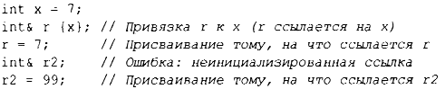
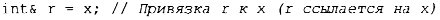

⇐1.9.1. Присваивание Содержание 1.10. Советы⇒
Инициализация отличается от присваивания. В общем случае, чтобы присваивание работало правильно, целевой объект присваивания должен иметь значение. С другой стороны, задачей инициализации является превращение неинициализированного фрагмента памяти в корректный объект. Для почти всех типов результат чтения или записи неинициализированной переменной не определен. Для встроенных типов это наиболее очевидно для ссылок:
К счастью, невозможно получить неинициализированную ссылку- в противном случае присваивание r2=99 сохраняло бы 99 в некотором неопределенном месте в памяти; в конечном итоге это могло бы привести к неверным результатам или краху программы.
Можно использовать для инициализации ссылки оператор =, но не дайте ему вас запутать! Например:
Это все еще инициализация, привязывающая r к х, а не копирование значения.
Различие между инициализацией и присваиванием имеет решающее значение и для многих пользовательских типов, таких как string и vector, где целевой объект присваивания владеет ресурсом, который в конечном итоге должен быть освобожден (§5.3).
Базовая семантика передачи аргументов и возврата значения из функции представляет собой инициализацию (§3.6). Например, именно так мы получаем возможность передачи аргументов по ссылке.